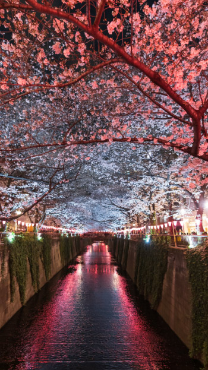
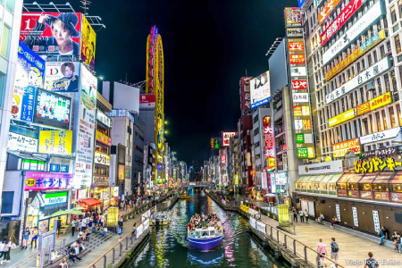
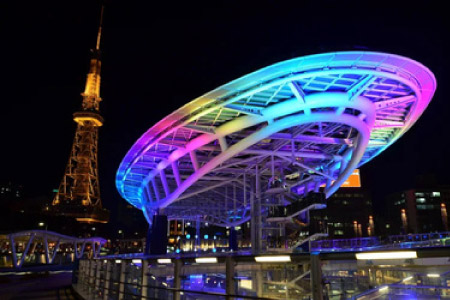
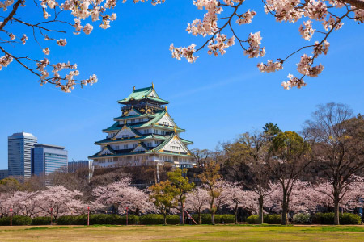

Por que viajar com a Pereira Oliveira
Osaka, Kyoto, Takayama e Tóquio na primavera, quando as cerejeiras florescem e o país inteiro se veste de rosa. Você viaja em grupo, acompanhado do Brasil, com cada detalhe pensado para você aproveitar cada instante desse evento único.
Cada aspecto da viagem é meticulosamente planejado por uma equipe dedicada, com profundo conhecimento dos destinos.
Nossa experiência em viagens de grupo cria uma dinâmica harmoniosa e uma convivência agradável entre os viajantes.
Um coordenador da Pereira Oliveira acompanha o grupo desde a saída do Brasil, com suporte contínuo em todo o roteiro.
Trabalhamos com uma rede de hotéis e fornecedores criteriosamente selecionados, para garantir conforto e bom atendimento.

Roteiro dia a dia
Apresentação no aeroporto e embarque, via São Paulo, com destino a Osaka, com conexão em Doha.
Chegada a Doha e conexão a caminho do Japão.
Chegada ao Aeroporto Internacional de Osaka, recepção com guia e traslado ao hotel.
Dia livre para um primeiro contato com a cidade.
O Castelo de Osaka e suas cerejeiras, o Templo Todaiji e o Parque dos Cervos em Nara, e o Santuário Fushimi Inari a caminho de Kyoto.
O Castelo Nijo, o Templo Dourado Kinkaku-ji refletido no lago e o Santuário Heian. Tarde livre para conhecer o histórico bairro de Gion.
Dia livre. Excursão opcional a Hiroshima e Miyajima de trem-bala, com o Parque Memorial da Paz e o Santuário Itsukushima.
Trem-bala a Nagoya e visita às vilas históricas de Magome e Tsumago, na rota Nakasendo. Continuação a Takayama e seu bairro Sanmachi, de casas de madeira da era Edo.
As casas Gassho-Zukuri de Shirakawago, Patrimônio da UNESCO, e viagem de trem-bala a caminho de Hakone.
O Parque Nacional de Hakone, com passeio de barco no Lago Ashi e vistas do Monte Fuji, e o teleférico. À noite, a Torre de Tóquio.
O templo Senso-ji em Asakusa, a rua Nakamise, o Santuário Meiji e o badalado bairro de Ginza.
Dia livre. Visita opcional a Nikko, ao Lago Chuzenji e ao Santuário Toshogu, Patrimônio da UNESCO.
Dia livre até o traslado ao aeroporto e embarque no voo com destino a Doha.
Chegada a Doha e traslado ao hotel. Dia livre.
City tour pela capital do Catar.
Tempo livre e traslado ao aeroporto.
Voo de retorno a Guarulhos e conexão de volta a Florianópolis.
Informações do roteiro


Investimento
Investimento total aproximado por pessoa, com a parte terrestre e o aéreo, em quarto duplo.
valor por pessoa em quarto duplo, com aéreo
Valores sujeitos a alteração sem aviso prévio. Apenas cotação.
Galeria

Outros roteiros